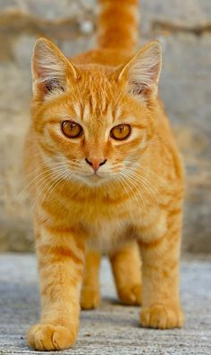
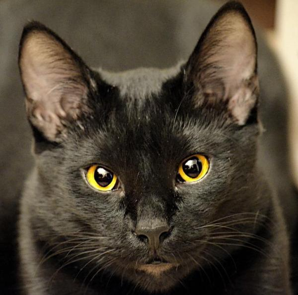
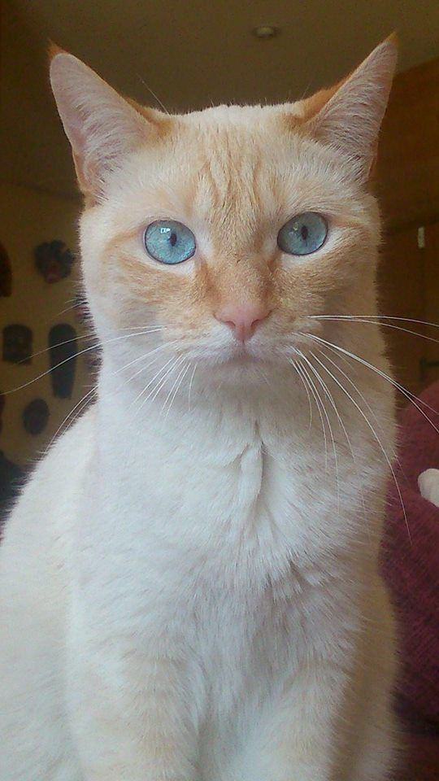
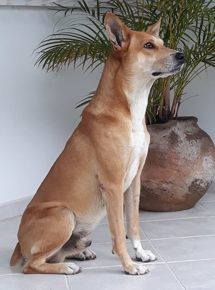
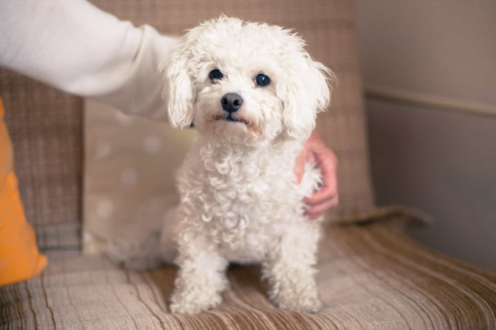
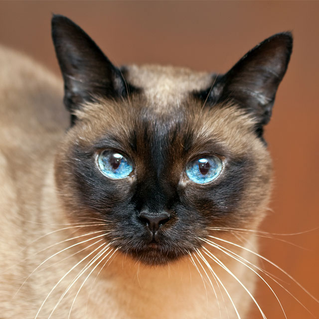

12 agosto 2020 – 19 agosto 2020
AUQMIA 🐱🐈🐶🐕
Muito se fala em sociedade protetora dos animais nos dias de hoje, em que a preocupação com os maus-tratos sofridos por pets é cada vez mais constante. Buscando aprovar legislações específicas e conscientizar a população em geral sobre a posse responsável de animais, essas entidades formam um conjunto cada vez maior de protetores de cães e gatos – entre outros bichos – mostrando que todas as formas de vida merecem respeito, atenção e o direito ao bem-estar.
Incentivando as denúncias contra maus-tratos e a adoção de pets abandonados, a sociedade protetora dos animais conta com representantes variados, incluindo desde associações antigas e específicamente criadas para proteger e promover o bem-estar animal até ONGs e pessoas que lutam ativamente pelos direitos dos bichos - ajudando tanto na divulgação de informações valiosas sobre o cuidado com exemplares de diferentes espécies quanto na elaboração de projetos especiais dedicados a um mundo menos injusto com a vida dos animais.
MOSTARDA é gatinho sem raça definida muito carinhoso e um dos mais velhos da ONG, com seus lindos olhos amarelo ele é capaz de fazer qualquer um se apaixonar.
CHI é um dos caçulas da ONG ele possui olhos amarelos e uma pelagem escura que deixa todo mundo apaixonado.
PIM é um gato classsico parecido com aqueles de filmes olhos azuis e uma pelagem mesclada com amarelo e branco, uma fofura.
BOBO é um cachorro leal sendo um dos mais velhos da ONG e um dos favoritos pelo seu jeito brincalhão.
SOCHE um cachorro poddle com descendência francesa uma das queridinhas da ONG uma fofura.
FIFI um gato siames com sua famosa cara e patinhas pretas e seus olhos azuis com a cor do mar uma lindeza.
